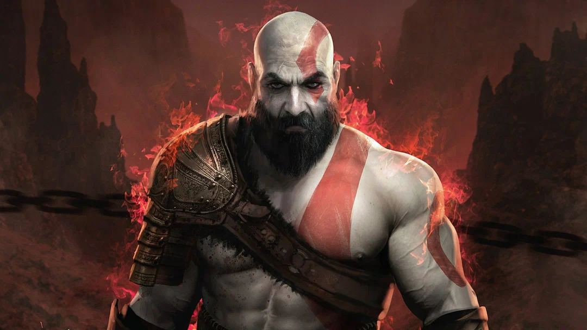
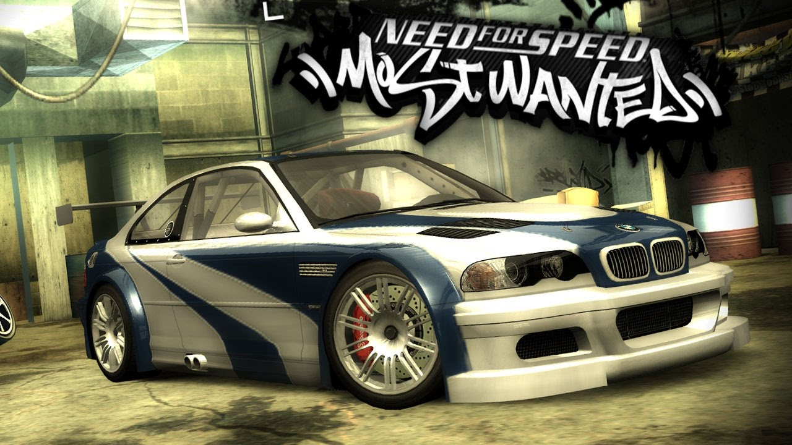
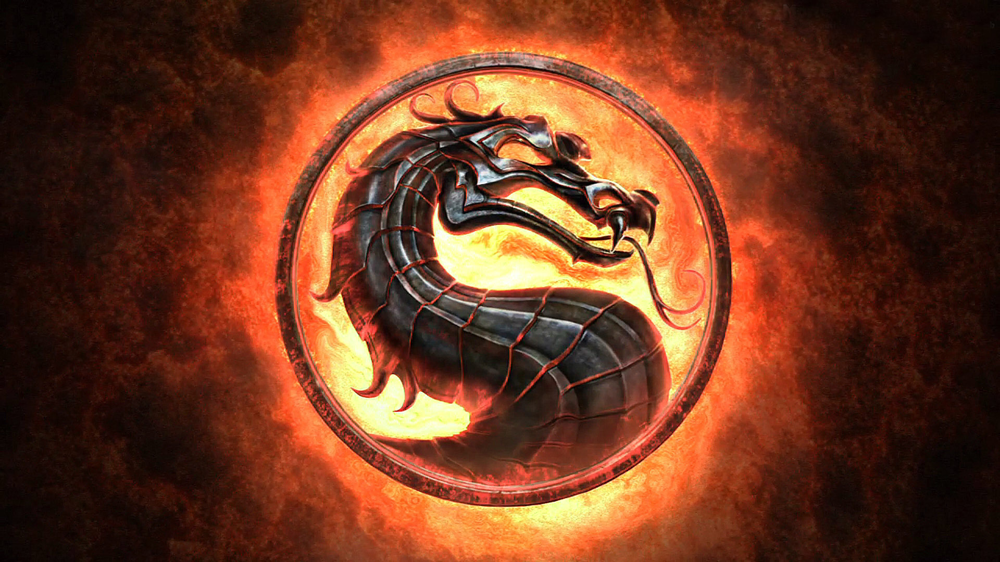

Artur Akhmedov
Малолетний недоверстальщик
Го побазарим
Об о мне
Крч Артурчик я, Арчи если удобнее. Мамин дед инсайдик. Мне 14 годиков, только пошёл в первый класс. Мои хобби это рисовать, смотреть аниме / фильмы ( под аниме я не имею в виду романтику по типу: Хоримия, Не издевайся Наготоро, эта Фарфоровая Кукла влюбилась, совсем нет. Я имею в виду Баки, Берсерк, ДжоДжо, Ковбой Бибоп, Драгон Болл, Блич... ), спать, и слушать просто лютейший фонк который разнесёт твои уши к фиям. Люблю спорт, занимаюсь воркаутом, боксом, качаюсь в зале и дома + играю в видео игры. Кстати о них
Мои цели в жизни:
-footerНомер один: Выучить html, css, и JV. Номер два: Стать программистом. Номер три: Выжить лёжа 60кг. Номер четыре: набрать мышечную массу начиная от 60кг ( сейчас вешу 56 ).
Любимые игры:
Серия игр: "God of War". Серия игр: "Need for Speed". Серия игр: "Mortal Combat".
"God of War"Божее, какая же это божественная игра... Как раз пятая часть выходит в октябре этого года как говорят)) О чём же игра спросите вы? Расскажу в кратце: Кратос родился и вырос в спарте. Оракул предсказала Зевсу что его свергнет мальчик со странными узорами на теле. Он отправил на поиски своего сына, и дочь: Афину и Ареса. Они кршили всё вокруг в поисках этого мальчика, как вдруг наткнулись на дом Кратоса. У него был брат - Деймос. И он родился с родимыми пятнами по всему телу. Они благополучно его похители. Крч я скипну всю историю, и скажу только то что из-за Ареса умерла его семья, и он решил отомстить богам за всё это. Ну и в итоге он перерезал нахуй всех Греческих богов, уехал в скандинавию, влюбился и заделал себе ребёнка. Мать умерла, а он остался наедине с сыном. Потом там ещё много чё было, но мне лень рассказывать:)
"Need For Speed"Офигенная серия игр, но с каждой новой частью всё сильнее и сильнее скатывается вниз, и вниз, и вниз... Вот NFS Most Wanted 2005 года выпуска вообще имба, лучшая часть в серии.
"Mortal Combat"Тоже очень крутая серия игр, но начиная с Армагидона разрабы начали делать дерьмо. Т.К их было несколько, у них были разные идеи. И в итоге один не очень умный человек в возрасте ипортил половину лора своими тупыми введениями, и деланьем не канона - каноном.
